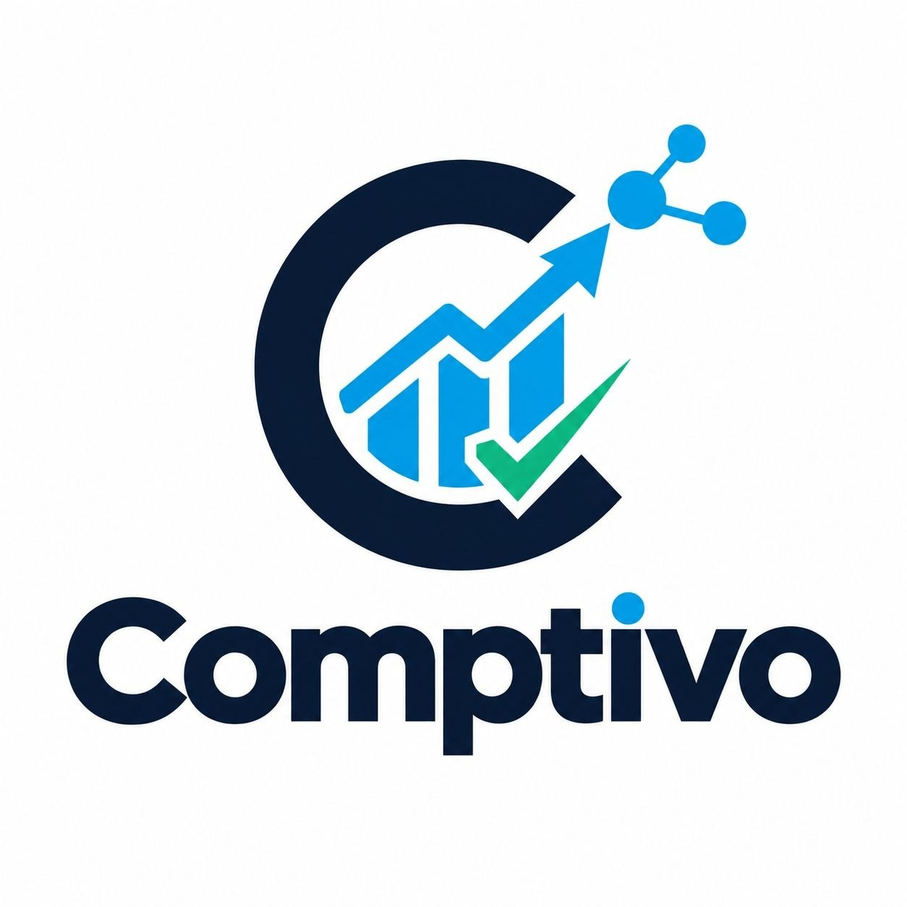
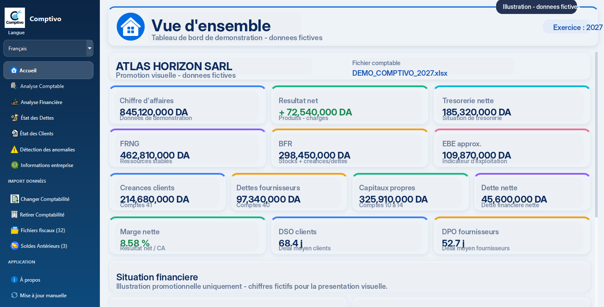

⌕
Recherche globale
Retrouvez immédiatement un compte, un tier, une pièce, une référence, un journal, un libellé ou un montant.
Comptivo est une solution moderne d'analyse et de contrôle comptable conçue pour aider les professionnels à mieux lire leurs données, structurer leurs vérifications et gagner un temps précieux au quotidien.


Comptivo est un logiciel professionnel dédié à l'analyse et au contrôle comptable. Il permet d'accéder plus rapidement à l'information, de visualiser des indicateurs pertinents et de centraliser les opérations de vérification dans un seul environnement de travail.
Pensé pour les professionnels, Comptivo accompagne l'utilisateur dans ses contrôles sans jamais remplacer son jugement métier. Les alertes sont présentées comme des points à vérifier afin d'encourager une lecture rigoureuse et responsable.
Comptivo réunit les outils essentiels pour simplifier les lectures, accélérer les recherches et professionnaliser le contrôle comptable.
Retrouvez immédiatement un compte, un tier, une pièce, une référence, un journal, un libellé ou un montant.
Accédez en un coup d'œil aux indicateurs clés, aux chiffres synthétiques et aux informations importantes.
Travaillez efficacement avec les modèles TVA, TAP, TVA à déduire et IRG directement depuis le logiciel.
Importez et exploitez les soldes antérieurs avec une logique adaptée aux comptes et aux tiers.
Identifiez rapidement les opérations qui nécessitent une vérification, sans conclure automatiquement à une erreur.
Faites évoluer l'application simplement grâce à un système de mise à jour manuelle intégré.
Comptivo a été conçu pour offrir une lecture fluide, structurée et professionnelle des données comptables. Les indicateurs, états et informations importantes sont visibles rapidement.
L'aperçu présenté ici constitue une illustration promotionnelle basée sur une capture du logiciel, avec des données entièrement fictives.
Navigation claire, simple et professionnelle.
Lecture rapide des indicateurs les plus importants.
Vision synthétique pour mieux orienter vos vérifications.
Présentation soignée adaptée à un usage métier.
Pour accélérer les contrôles, gagner du temps et exploiter plus efficacement l'information comptable.
Pour centraliser l'analyse, améliorer le suivi des dossiers et renforcer la qualité du contrôle.
Pour obtenir une lecture plus claire de la comptabilité et identifier plus vite les points à vérifier.
Les réponses essentielles pour comprendre ce qu’est Comptivo, à qui il s’adresse et ce qu’il permet de faire.
Comptivo est un logiciel professionnel d’analyse comptable et financière pour Windows 10 et Windows 11. Il centralise l’analyse, le contrôle, les tableaux de bord et plusieurs états comptables dans un environnement de travail unique.
Comptivo s’adresse aux comptables, cabinets comptables et entreprises qui souhaitent accélérer leurs contrôles, mieux exploiter leurs données et disposer d’une lecture plus claire de leur comptabilité.
Comptivo peut aider à analyser les comptes clients et fournisseurs, les créances, les avances, le bilan actif et passif, le TCR, les soldes antérieurs et plusieurs indicateurs financiers, ainsi qu’à repérer des opérations qui nécessitent une vérification.
Oui. La version actuelle de Comptivo est destinée aux ordinateurs Windows 10 et Windows 11 en 64 bits.
Oui. Comptivo peut générer des rapports professionnels au format PDF et proposer des exports Excel pour faciliter l’exploitation et le partage des analyses.
Le site de Comptivo présente le logiciel, tandis que l’application est conçue pour conserver les données de travail sur le poste de l’utilisateur selon son mode d’utilisation.
Comptivo vous aide à structurer vos analyses, à gagner du temps dans vos recherches et à professionnaliser vos vérifications comptables dans un environnement moderne et pratique.
Pour demander une présentation, obtenir plus d'informations, discuter d'un besoin ou connaître les modalités d'accès au logiciel, contactez-nous directement.
Une solution professionnelle d'analyse et de contrôle comptable conçue pour offrir une lecture plus claire, plus rapide et plus efficace de vos données.